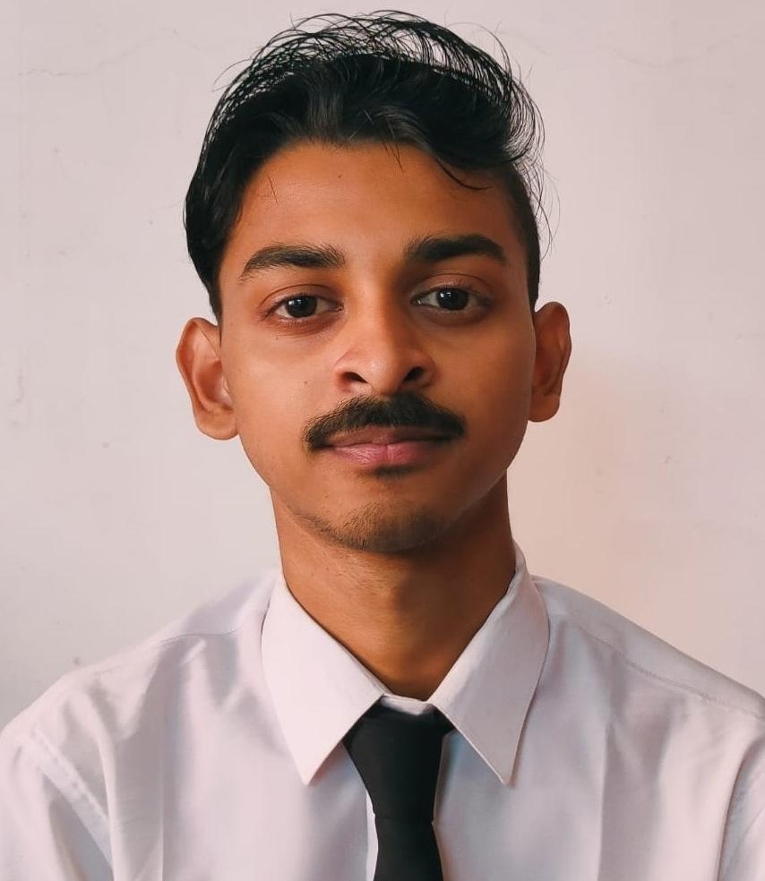
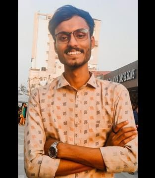
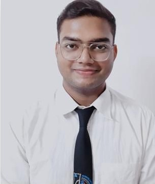
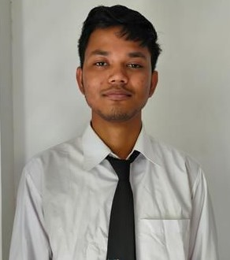
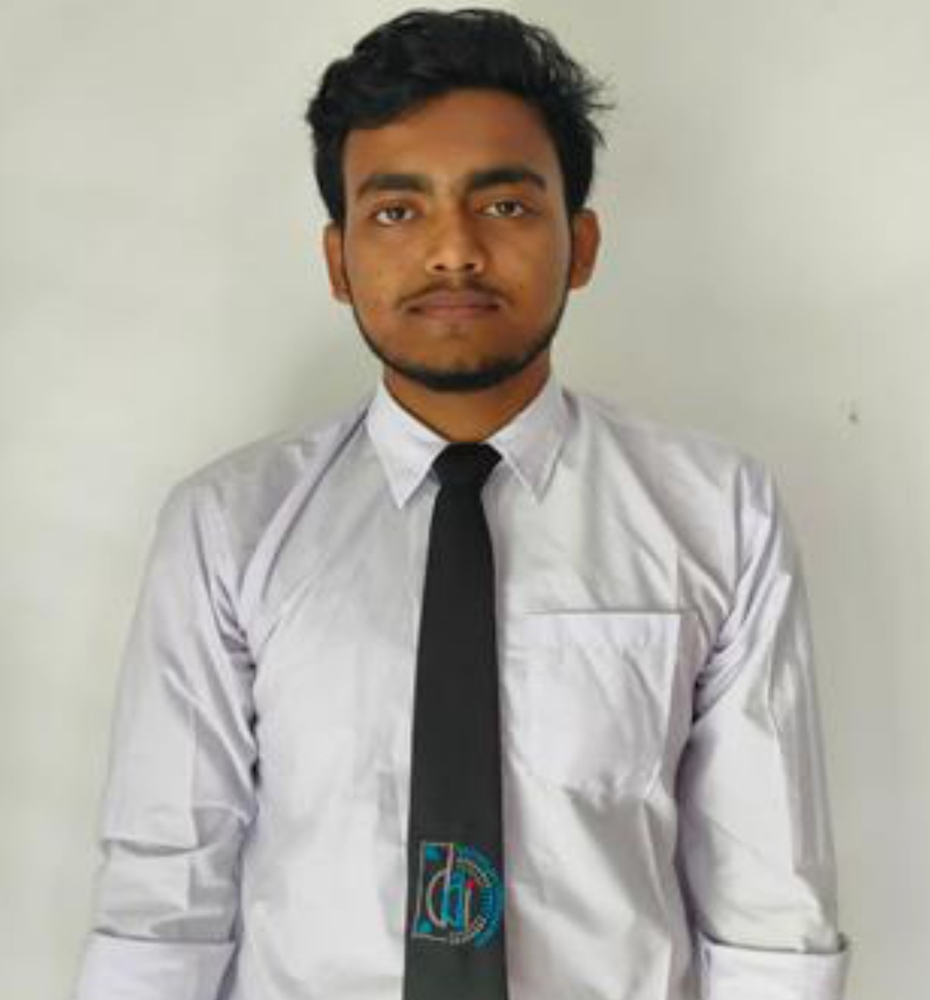
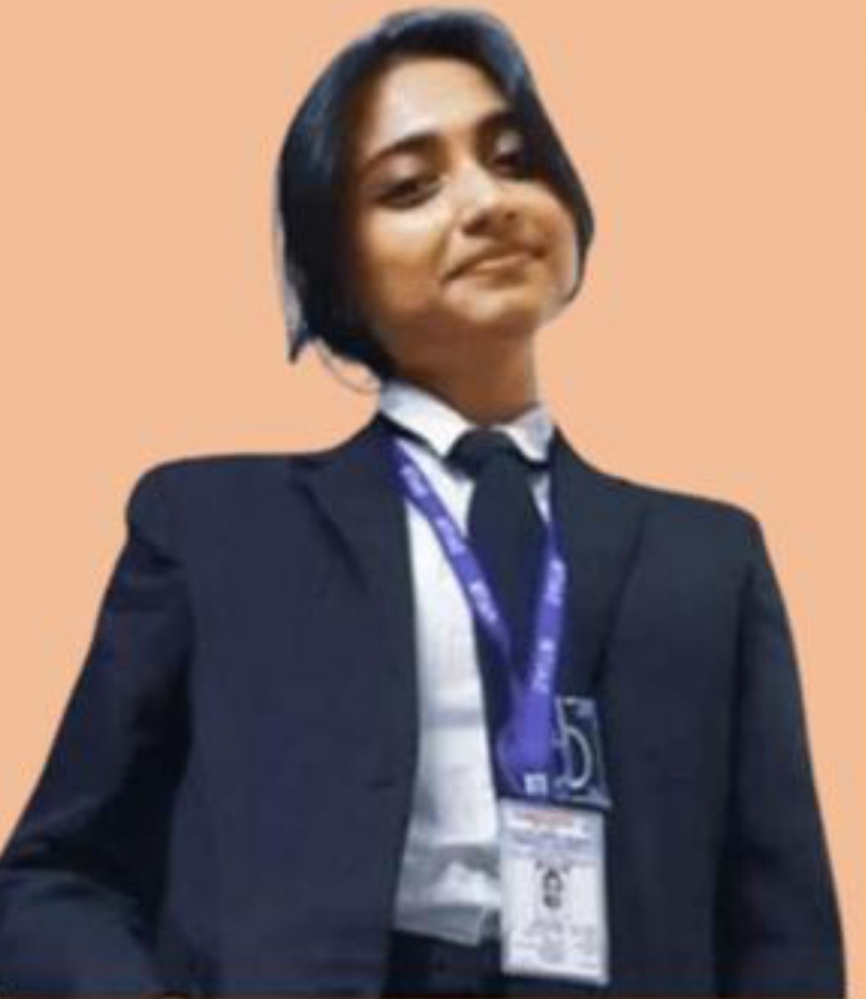
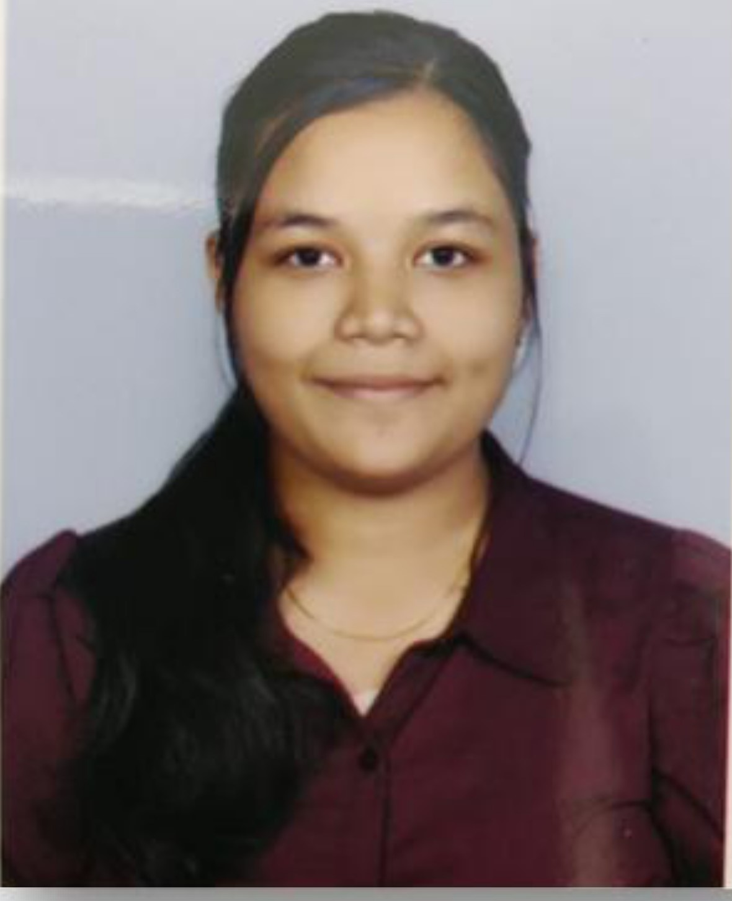
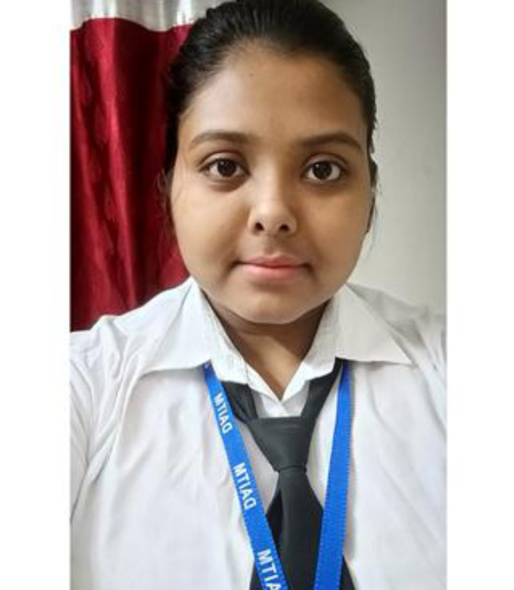

Who We Are
Established in the year 2002, Dinabandhu Andrews Institute of Technology and Management(DAITM), Kolkata is one of the leading self-financed institute offering top quality Technological and Management Education in West Bengal. Affiliated to Maulana Abul Kalam Azad University of Technology, West Bengal(formerly known as West Bengal University of Technology), DAITM aims at nurturing the students with profound knowledge and specialized education to emerge as confident and competent Technocrats and Business Managers.The institute is located at Baishnabghata Patuli area in Kolkata.In tune with the advanced education standards, the Institute offers 3-Year full-time regular BBA, BCA, BBA in Hospital Management and B.Sc in Medical Lab Technology degree programs and M.Sc. (Computer Science & Applied Mathematics) at much affordable prices. DAITM is an acclaimed educational institution committed to impart world-class education to bright young students and prepare them for the global market. With the state-of-the-art infrastructure and industry-specific academic programs, DAITM focuses on building a pool of intellectual capital, equipped with unmatched skills and competence.
Our Team
-

SOUMYADIP DAS
Design,Frontend
-

ARDHENDU DUTTA
Frontend
-

UTSHO RUDRA
Frontend
-

BIBHAS DAS
Backend, Database
-

ARINDAM DAS
Backend, Database
-

BINEETA SAHA
Backend, Documentation
-

SHARMI KARMAKAR
Presentation
-

KEYA DAS
Presentation